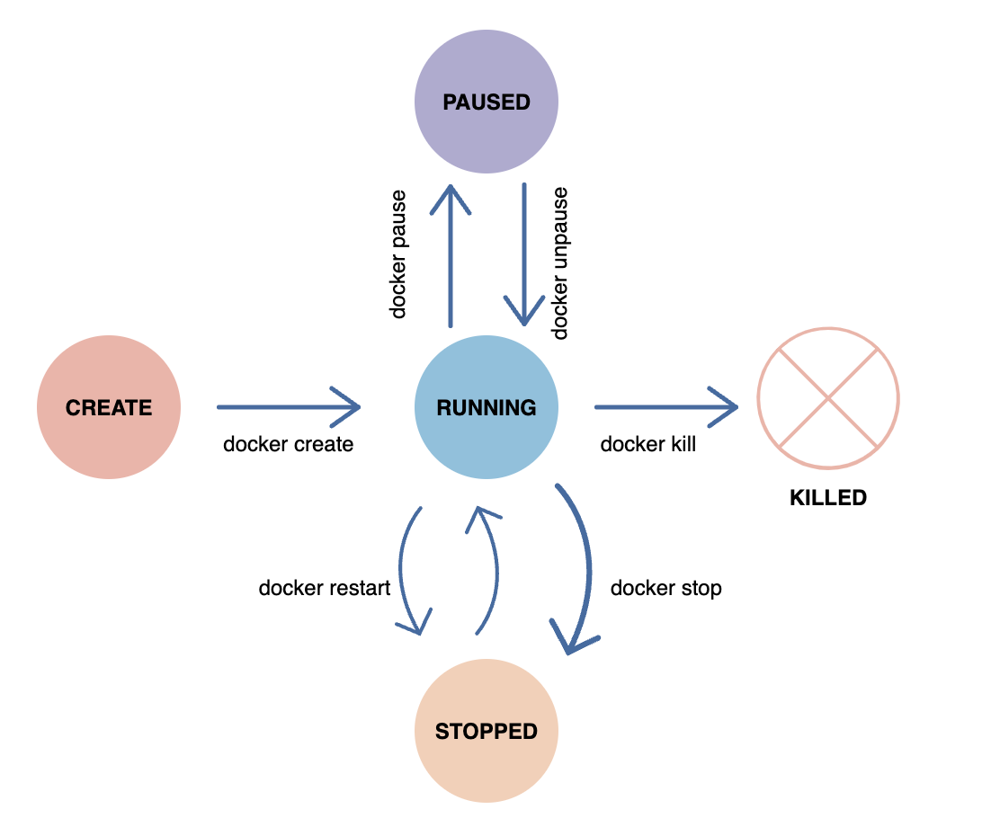
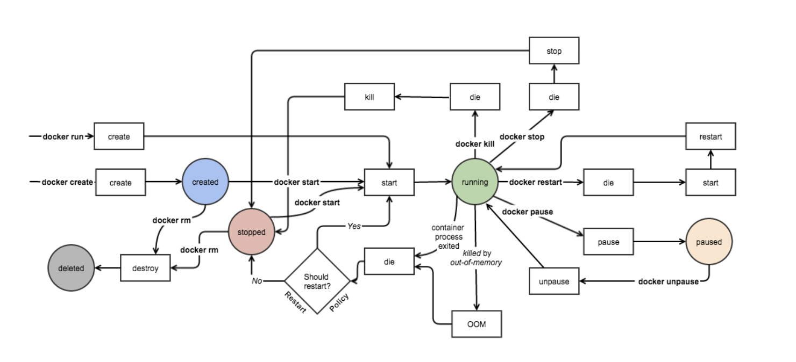

Overview
Docker architecture
- Docker Daemon
- Docker Client
- Docker Registries
- Docker Objects
Docker uses a client-server architecture. The Docker client talks to the Docker daemon, which does the heavy lifting of building, running, and distributing your Docker containers. The Docker client and daemon can run on the same system, or you can connect a Docker client to a remote Docker daemon. The Docker client and daemon communicate using a REST API, over UNIX sockets or a network interface. Another Docker client is Docker Compose, that lets you work with applications consisting of a set of containers
Docker Daemon
The Docker daemon (dockerd) listens for Docker API requests and manages Docker objects such as images, containers, networks, and volumes. A daemon can also communicate with other daemons to manage Docker services.
Docker Client
The Docker client (docker) is the primary way that many Docker users interact with Docker. When you use commands such as docker run, the client sends these commands to dockerd, which carries them out. The docker command uses the Docker API. The Docker client can communicate with more than one daemon.
Docker registries
A Docker registry stores Docker images. Docker Hub is a public registry that anyone can use, and Docker is configured to look for images on Docker Hub by default. You can even run your own private registry.
Docker Objects
When you use Docker, you are creating and using images, containers, networks, volumes, plugins, and other objects
-
Images An image is a read-only template with instructions for creating a Docker container. Often, an image is based on another image, with some additional customization.
Each instruction in a Dockerfile creates a layer in the image. When you change the Dockerfile and rebuild the image, only those layers which have changed are rebuilt. This is part of what makes images so lightweight, small, and fast, when compared to other virtualization technologies.
-
Containers
A container is a runnable instance of an image. You can create, start, stop, move, or delete a container using the Docker API or CLI. You can connect a container to one or more networks, attach storage to it, or even create a new image based on its current state.
By default, a container is relatively well isolated from other containers and its host machine. You can control how isolated a container’s network, storage, or other underlying subsystems are from other containers or from the host machine.
A container is defined by its image as well as any configuration options you provide to it when you create or start it. When a container is removed, any changes to its state that are not stored in persistent storage disappear.
Docker defines certain policies to restart the container
- On-failure: container restarts only when a failure that occurred is not due to the user,
- Unless-stopped: container restarts only when a user executes the command to stop it,
- Always: the container is always restarted irrespective of error or other issues.
Docker Run
-
Pulls the
image: Docker checks for the presence of the ubuntu image and, if it doesn't exist locally on the host, then Docker downloads it from Docker Hub. If the image already exists, then Docker uses it for the new container. -
Creates a new container: Once Docker has the image, it uses it to create a container.
-
Allocates a filesystem and mounts a read-write layer: The container is created in the file system and a read-write layer is added to the image.
-
Allocates a network / bridge interface: Creates a network interface that allows the Docker container to talk to the local host.
-
Sets up an IP address: Finds and attaches an available IP address from a pool.
-
Executes a process that you specify: Runs your application, and;
-
Captures and provides application output: Connects and logs standard input, outputs and errors for you to see how your application is running.
Docker Storage
Lets discuss about the how containers are run and their association with volume mounts
Once the Dockerfile all the commands, and when trying to build, it will create each layer of containers and finally makes a complete readonly snapshot of the image. These layes are called as image layers and they are in read-only. These intermidiate containers are stored in a cache, so incase if next build uses the same image it would be fetched from these containers, hence it will be taken very less time tp build.
Once the image is built, we will run docker run image which will copy the executable from the image layer and writes to an read-write layer. These are called as copy-on-write. when the container runs, the storage is created in the run time and persists only until the contaniner is up. once the container is destroyed, its volume mounts are destroyed.
In order to make containers retain their data, we would be using something called as persistant volumes, where we would explictly say to mount the data of our local paths to container paths. These are available in /var/lib/docker/volumes/.
docker run -d -p hostport:containerport -v localdata:container image
These types of mount are called as volume mounts
Newer version you would be using the same using mount bind and they are called as volume binds
docker run -d -p hostport:containerport --mount -bind src=localdata,destination=container image
Different mount types available:
- Bind mounts: These can be stored anywhere on the host system
- Volume mount: they are managed by Docker and are stored in a part of the host filesystem.
- tmpfs mount: they are stored in the host system's memory. These mounts can never be written to the host's filesystem.
Docker Container lifecycle
- Create phase
- Running phase
- Paused phase/unpause phase
- Stopped phase
- Killed phase


stateful or stateless
Stateless applications should be preferred over a Stateful application for Docker Container. We can create one container from our application and take out the app's configurable state parameters. Once it is one, we can run the same container with different production parameters and other environments. Through the Stateless application, we can reuse the same image in distinct scenarios. It is also easier to scale a Stateless application than a Stateful application when it comes to Docker Containers.
Docker Networks
- bridge: Default network which the containers connect to if the network is not specified otherwise
- none: Connects to a container-specific network stack lacking a network interface
- host: Connects to the host’s network stack
default docker network
docker container run -d -p 8088:80 --name nginx-server1 nginx:alpine
docker inspect nginx-server1
docker container ps
curl http://localhost:<port>
custom docker network
docker network create -d bridge my-bridge-network
docker container run -d -p 8788:80 --network="my-bridge-network" --name nginx-server2 nginx:alpine
docker container ps
curl http://localhost:<port>
docker inspect nginx-server2
CMD Vs ENTRYPOINT
An ENTRYPOINT allows us to configure a container that will run as an executable.
Any command line arguments passed to docker run will be appended to the entrypoint command, and will override all elements specified using CMD. For example, docker run bash will add the command argument bash to the end of the entrypoint.
Containers are meant to run a task or a process. A container lives as long as a process within it is running. If an application in a container crashes, container exits.
who defines which process should be running inside a container? CMD tells the Docker which program shoud be run when the container starts.
Difference between the CMD and ENTRYPOINT with related to the supplied to the "docker run" command. While the CMD will be completely over-written by the supplied command (or args), for the ENTRYPOINT, the supplied command will be appended to it.
Dockerfile
-
FROM - sets the base image for subsequent instructions, especially easier to start by pulling an image.
-
MAINTAINER - Author field of the generated images
-
RUN - execute any commands in a new layer on top of the current image and commit the results. The resulting committed image will be used for the next step in the Dockerfile..
RUN [ "echo", "$HOME" ]will not do variable substitution on $HOME as exec won't invoke any command shell. if you want shell processing you need to specify the shellRUN [ "sh", "-c", "echo", "$HOME" ] -
CMD - Command that needs to be executed while running container. The main purpose of a CMD is to provide defaults for an executing. These defaults can include an executable, or they can omit the executable, in which case we must specify an ENTRYPOINT instruction as well.
CMD It has 3 forms:
CMD ["executable","param1","param2"] (exec form, this is the preferred form) CMD ["param1","param2"] (as default parameters to ENTRYPOINT) CMD command param1 param2 (shell form)
-
WORDDIR AND ENV - The WORKDIR instruction sets the working directory for any RUN, CMD and ENTRYPOINT instructions that follow it in the Dockerfile. The WORKDIR instruction can resolve environment variables previously set using ENV. The ENV instruction sets the environment variable to the value . This value will be passed to all future RUN instructions. The environment variables set using ENV will persist when a container is run from the resulting image.
-
ADD copies new files, directories or remote file URLs from and adds them to the filesystem of the container at the path .
-
ENTRYPOINT allows us to configure a container that will run as an executable.